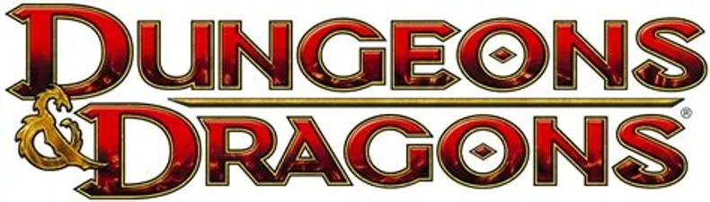
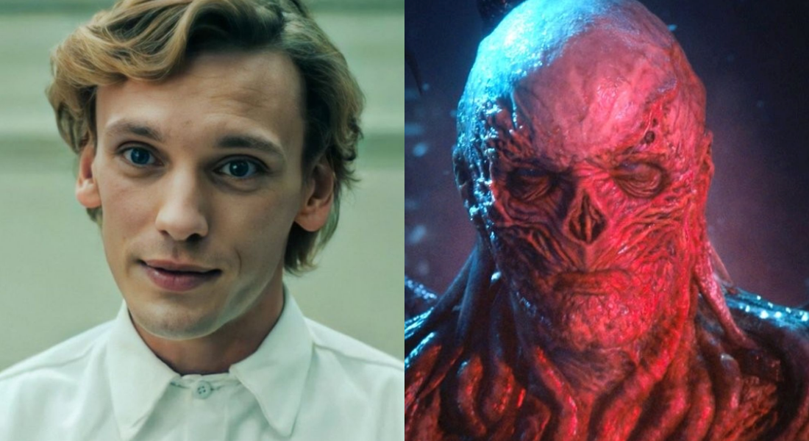

Dungeons & Dragons (Português: Masmorras e Dragões) (comumente abreviado como D&D ou DnD), é um jogo de interpretação de papéis de alta fantasia criado por Gary Gygax e Dave Arneson e publicado pela primeira vez em 1974 nos Estados Unidos pela TSR, Inc., empresa fundada por Gygax e Don Kay em 1973. Atualmente na sua 5ª edição, o jogo é publicado nos Estados Unidos pela Wizards of the Coast, uma subsidiária da Hasbro e no Brasil pela Galápagos Jogos. O jogo surgiu de uma variação do WarGame de miniaturas "Chainmail", de 1971, servindo como sistemas inicial de regras. A publicação do D&D é considerada como a origem dos RPGs modernos e o inicio da indústria de RPGs, e profundamente influenciou os video games, principalmente os RPGs eletrônicos. Jogadores de D&D criam personagens que embarcam em aventuras imaginárias em que eles enfrentam monstros, reúnem tesouros, interagem entre si e ganham pontos de experiência para se tornarem incrivelmente poderosos à medida que o jogo avança. O D&D se destaca dos wargames tradicionais por permitir que cada jogador controle um personagem específico, ao invés de um exército. Miniaturas ou marcadores em um tabuleiro quadriculado são usados ocasionalmente para representar esses personagens. O D&D também apresentou o conceito de Mestre de Jogo (Dungeon Master ou DM, no original), que atua como juiz e narrador e é responsável por manter o cenário ficcional do jogo e aplicar as regras a cada situação descrita.
O sem nariz, "O diabo esta entre nós"
O Henry Creel (ou conhecido com 001 ou Vecna). Levou um pau da 011 e foi para os quintos dos inferno, lá ele criou o seu "reino" fazendo uma cópia de Hawkins